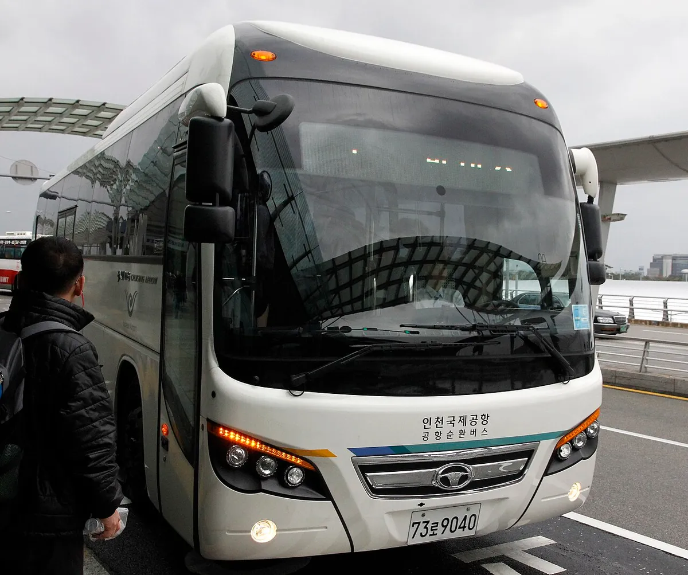
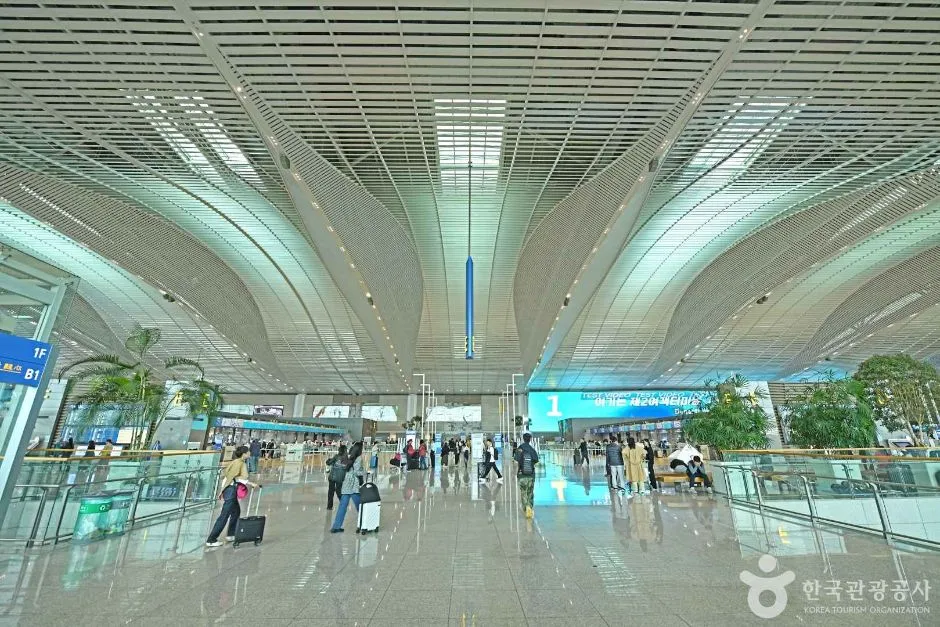
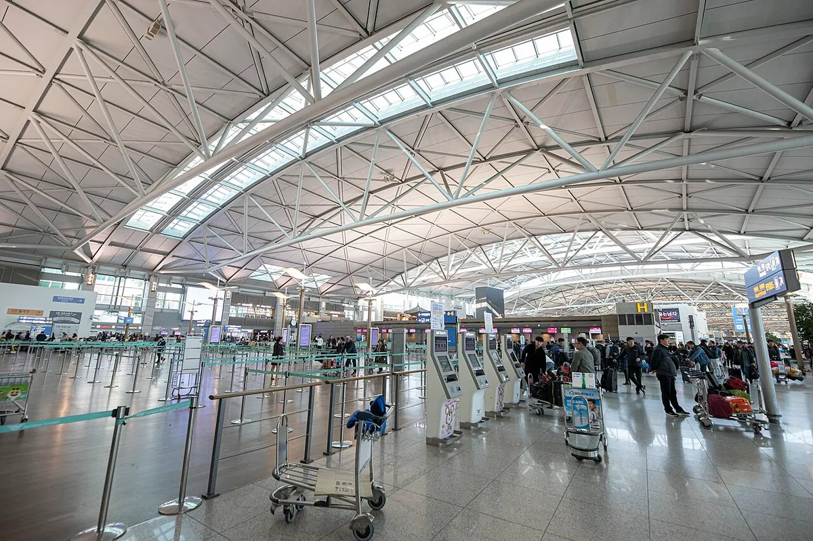
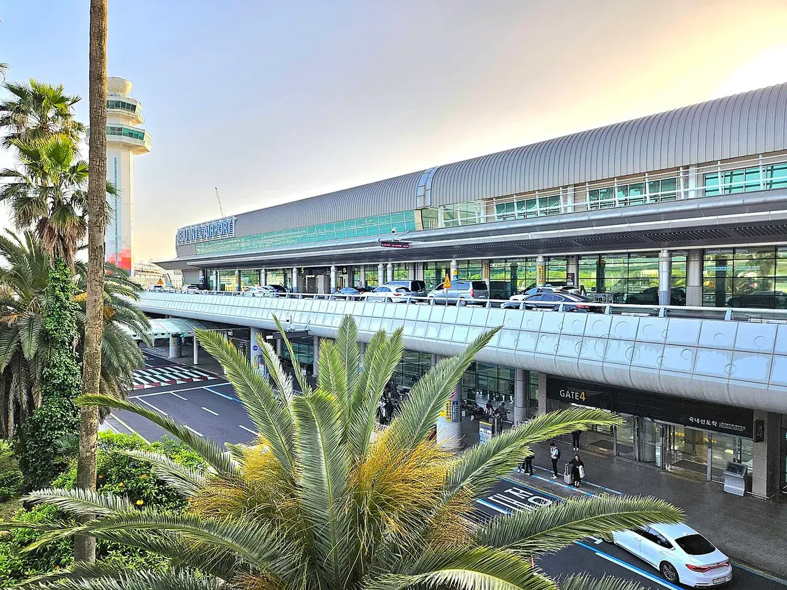
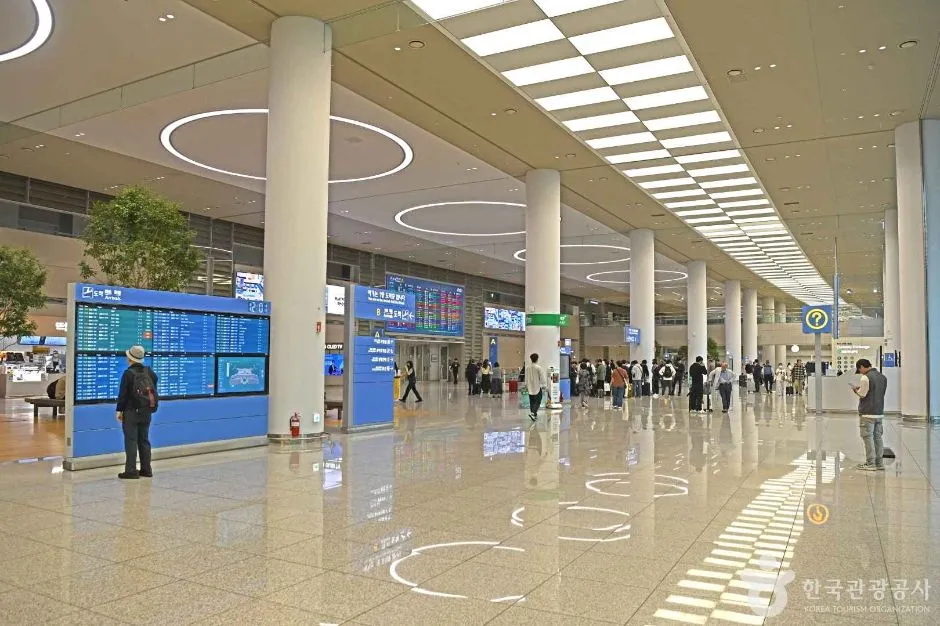

▲ 공항 노천 주차장 전경. 성수기에는 주차 가능 대수와 예약 여부를 미리 확인하는 것이 안전하다 ⓒ Sgroey, Wikimedia Commons, CC BY-SA 4.0
"장기주차 일주일이면 얼마일까?" 해외여행을 앞두고 공항 주차를 검색하면 정보가 제각각이라 헷갈린다. 인천국제공항공사 공식 요금표 기준으로 장기주차장은 1일 최대 9,000원, 단기주차장은 1일 최대 24,000원이다. 같은 일주일이라도 어디에 세우느냐에 따라 약 10만 원 넘게 차이 난다는 얘기다.
이 글은 2026년 9월 29일 열람한 인천국제공항공사(airport.kr)와 한국공항공사(airport.co.kr) 공식 페이지를 기준으로 인천 T1·T2 요금, 예약주차, 셔틀, 주차대행, 김포·제주 비교, 연휴 성수기 팁을 정리했다. 다만 인천공항 요금표 페이지에는 개정일이 따로 적혀 있지 않았다. 그래서 본문 요금은 '9월 29일 열람 기준'으로 표기하고, 출발 직전 공식 페이지에서 다시 확인하도록 안내한다.
1. 일주일 맡기면 얼마? — 주차 방식별 단순 계산
먼저 대략의 감을 잡아 보자. 아래는 공식 요금표의 1일 최대 요금을 그대로 곱한 단순 계산이다. 실제 요금은 입출차 시각과 할인 적용 여부에 따라 달라지므로 참고용으로만 보자.
| 방식 | 3일 | 7일 | 10일 |
|---|---|---|---|
| 장기주차장 | 27,000원 | 63,000원 | 90,000원 |
| 단기주차장 | 72,000원 | 168,000원 | 240,000원 |
| 일반 주차대행(대행료 2만 원 + 장기 요금) | 47,000원 | 83,000원 | 110,000원 |
단기주차장은 하루 24,000원이라 3일만 넘어가도 장기주차장보다 크게 비싸다. 인천공항공사는 공식 안내에서 1일 이상 장기 주차 차량에는 장기주차장 이용을 권장한다. 주차대행 계산은 공식 안내에 '주차료는 장기 요금 별도'로 적힌 점을 토대로 한 추정이다.
▲ 노천 주차장에 차량이 가득 찬 모습. 성수기에는 주차 가능 대수를 미리 확인하는 것이 안전하다(위키미디어 제공 사진, 특정 구역과 다를 수 있음) ⓒ Sgroey, Wikimedia Commons, CC BY-SA 4.0
2. 인천공항 요금표 — 단기·장기·예약
인천공항공사 요금표에 따르면 제1·제2여객터미널의 요금 체계는 같다. 단기주차장은 승용차 전용(높이 2.1m 이하)이고, 장기주차장에는 T1 주차타워도 포함된다.
| 구분 | 최초 무료 | 기본·추가 요금 | 1일 최대 |
|---|---|---|---|
| 단기주차장 | 10분 | 기본 30분 1,200원, 이후 15분당 600원 (시간당 2,400원) | 24,000원 |
| 장기주차장 | 10분 | 시간당 1,000원 | 9,000원 |
| 예약주차 | — | 장기와 동일 (실제 입출차 시각 기준 과금) | 9,000원 |
📍 요금 개정일을 확인하지 못한 이유
공식 요금표 페이지에는 '개정일'이나 '시행일'이 표기돼 있지 않았다. 2026년 8월 1일부터 오른 것은 상주 직원용 정기권이고(세계일보 보도), 일반 여객용 시간당 요금 개정 공지는 이번 조사에서 확인하지 못했다. 최신 요금은 인천공항 주차요금 바로가기에서 확인 가능하다.
| 대상 | 할인율 |
|---|---|
| 경차, 장애인, 국가유공자 | 50% |
| 저공해차 1·2종 | 50% |
| 저공해차 3종 | 20% |
| 다자녀 가구(자녀 2명 이상, 막내 18세 미만) | 50% |
공사는 대상 서류를 정부 데이터베이스로 자동 확인하는 경우가 많다고 안내한다. 정산은 사전정산기, 모바일 앱, 유인 정산소, 자동 정산기에서 가능하며 신용카드·교통카드·선불카드를 쓸 수 있다.
3. 예약주차 방법 — 45일 전부터 4시간 전까지
성수기에 가장 확실한 대비책은 예약주차다. 예약 시스템은 주차장 안내 페이지에서 연결되며, 공식 안내 기준은 다음과 같다.
| 항목 | 내용 |
|---|---|
| 예약 가능 시점 | 입차 예정 시각 기준 45일 전 ~ 4시간 전 |
| 주차 기간 | 1일 이상 30일 미만으로 안내되나 공식 페이지마다 표기가 달라 예약 화면에서 재확인 필요 |
| 입차 가능 시간 | 예정 시각 기준 4시간 전 ~ 4시간 후 |
| 미이용 시 | 입차 예정 시각 4시간 경과까지 입차하지 않으면 자동 취소, 예약 보증금 1만 원은 위약금 처리(예약 안내 기준) |
| 결제·환급 | 카드 결제만 가능(현금·하이패스 불가), 출차 후 영업일 5일 이내 환급 처리로 안내 |
| 출차 후 재입차 | 불가 (한 번 나가면 같은 예약으로 다시 들어올 수 없음) |
| 주차 구역 | 일반 단기·장기와 별도인 예약 전용 주차장, 입차 전 위치 확인 필요 |
| 셔틀 미운행 시간(T1) | 자정~새벽 5시 T1 셔틀 미운행, 도보 약 30분 안내(예약 안내 기준) |
| 차량 제한 | 높이 2.8m 초과 차량 불가 |
| 요금 | 장기주차와 동일, 실제 입출차 시각 기준 |
| 문의 | 032-743-3460~1 (예약·취소·문의) |
✅ 예약 전 확인할 것
· 출국 시각이 아니라 내가 주차장에 들어갈 시각을 예약 시각으로 잡을 것
· 귀국일이 늦어져도 실제 출차 시각 기준으로 과금되므로 별도 연장 신청이 필요한지 화면 안내를 확인할 것
· 차고 높이가 높은 SUV·승합차는 2.8m 제한과 구역별 높이 제한을 확인할 것
· 새벽 항공편이면 T1 셔틀이 다니지 않는 자정~5시 전후 이동 방법(공항철도·택시)을 따로 계획할 것
· 다자녀 할인은 홈페이지 사전 승인이 필요하다고 안내됨
· 예약이 없어도 장기주차장 일반 이용은 가능하지만 성수기에는 만차가 될 수 있음
예약 신청은 인천공항 주차 예약 바로가기에서 가능하다.
▲ 출발 며칠 전 스마트폰으로 예약해 두면 입차 시각 변동에도 대비할 수 있다(개념 이미지) ⓒ CarPrism (AI 생성 이미지)
4. 장기주차장 셔틀 — 얼마나 걸리고 어디서 타나
제2여객터미널 장기주차장은 터미널 북쪽에 있고, 순환버스는 5~16분 간격, 소요 약 15분으로 공식 안내에 적혀 있다. 제1여객터미널은 장기주차장 P1·P2 등에서 셔틀 승강장이 나뉘어 있어, 주차한 구역의 승강장을 사진으로 남겨 두면 귀국 후 헷갈리지 않는다. 휠체어 이용자는 무료 리프트 차량을 이용할 수 있다.
혼잡도 안내도 있다. 공사 장기주차장 혼잡도 페이지에는 구역별 주차 가능 대수가 실시간으로 표시되고 "매일 5~8시, 16~19시는 주차장 혼잡이 예상된다"는 주의 문구가 붙는다. 여행신문은 2026년 7월 1일 개편 이후 셔틀 배차간격이 T1은 평균 16분에서 6분, T2는 6분에서 3분으로 줄었다고 보도했는데, 이 보도는 직원 셔틀 개선 맥락이 섞여 있어 일반 여객 셔틀에 그대로 적용되는지는 확인하지 못했다.

▲ 인천공항 장기주차장과 터미널을 잇는 순환 셔틀버스(위키미디어 제공 사진) ⓒ IMKSv, Wikimedia Commons, CC BY-SA 4.0
5. 주차대행(발렛) — 2만 원, 하지만 조건 확인
공항 공식 안내에 올라온 T1 주차대행은 일반 차량 2만 원, 경차·장애인·보훈 차량 1만 원이고, 실제 주차료는 장기 주차 요금으로 별도 부과된다. 운영은 24시간, 접수 장소는 T1 단기주차장 지하 1층 A구역이며 사전 예약이 필수다(워크인 불가). 차량은 실외 주차장에 보관되어 날씨 영향을 받는다는 점도 안내돼 있다.
📍 개편안 논란과 현재 상태
공사가 2026년 1월 1일부터 프리미엄 주차대행(4만 원)을 도입하고 일반 주차대행의 접수·인도 장소를 장기주차장으로 옮기려 했으나 비판이 이어졌고, 국토교통부가 '졸속 추진·절차 위반'을 지적한 뒤 개편안이 백지화되고 기존 방식 유지로 가닥이 잡혔다는 보도가 나왔다. 현재 적용 방식은 반드시 T1 공식 주차대행 안내 바로가기에서 확인 가능하다.
| 구분 | 제1여객터미널 | 제2여객터미널 |
|---|---|---|
| 서비스 요금 | 일반 2만 원, 경차·장애인·보훈 1만 원 | 일반 2만 원, 경차·장애인·보훈 1만 원 |
| 주차료 | 장기 요금 별도 | 장기 요금 별도(후불 정산) |
| 접수 장소 | 단기주차장 지하 1층 A구역 | 단기주차장 지하 1층 서편 |
| 운영 | 24시간, 예약 필수 | 24시간, 예약 필수 |
| 공식 운영업체 표기 | 맥스서브 | 아마노코리아 |

▲ 제2여객터미널 내부 전경. 주차대행 접수는 터미널이 아니라 단기주차장 지하에서 이뤄진다(한국관광공사 제공) ⓒ 사진=한국관광공사
6. 사설 주차대행·공항 밖 주차장 — 공식 안내가 경고하는 것
T2 공식 주차대행 안내에는 "호객인들이 차를 인수하여 공항 밖 주변 주차장에 주차시키는 공항 주변 사설 주차는 인천공항공사와 무관"하다는 경고 문구가 있다. 사고나 분실이 나도 공사가 책임지지 않는다는 뜻이다. 공식 대행은 예약 후 지정 접수 장소에서 유니폼을 입은 직원에게 차량을 맡기고 모바일 접수증을 받는 방식이다.
✅ 맡기기 전 확인할 것
· 공식 예약 경로(공식 안내 페이지에 링크된 업체)로만 예약했는지
· 접수 장소가 안내된 지하 접수 데스크인지, 길에서 호객하는 사람이 아닌지
· 차량 내 귀중품·하이패스 단말기·서류를 정리했는지, 접수증 사진을 남겼는지
· 차량이 실외 주차장에 보관될 수 있다는 안내를 확인했는지(T1 안내 기준)

▲ 주차를 마치고 셔틀로 도착하면 체크인까지 여유 시간이 필요하다. 인천공항 제1여객터미널 출국장(위키미디어 제공 사진) ⓒ Arne Müseler, Wikimedia Commons, CC BY-SA 3.0 de
7. 김포·제주공항과 비교하면
한국공항공사가 운영하는 김포·제주는 인천보다 요금 체계가 다르고 요일별 상한이 있다. 소형차 기준 공식 페이지 수치는 다음과 같다.
| 공항·주차장 | 기본·추가 요금 | 1일 최대(평일) | 1일 최대(금~일·공휴일) |
|---|---|---|---|
| 김포 국내선 | 30분 1,000원, 15분당 500원 | 20,000원 (24시간) | 30,000원 |
| 김포 국제선(지하/주차빌딩) | 30분 1,000원, 15분당 500원 | 18,000원 / 20,000원 (월~목) | 27,000원 / 30,000원 |
| 제주 P1 | 30분 600원, 10분당 200원 | 10,000원(월~목) | 15,000원 |
| 제주 P2 장기 | 30분 600원, 10분당 200원 | 9,000원(월~목, 10% 할인 적용) | 13,500원 |
제주공항은 P1에서 입차 후 최초 10분 무료, 사전 무인정산 시 추가 15분 무료 혜택이 안내된다. P2는 2025년 9월 1일부터 10% 할인이 적용된다고 표기돼 있다. 김포 국제선 수치는 공식 페이지에서 국내선과 같은 표로 정리돼 있는지 확인되지 않아 언론·블로그 정리 글을 근거로 한 참고치이며, 출발 전 공식 페이지 확인이 필요하다. 김포 김포공항 주차 안내 바로가기와 제주 제주공항 주차 안내 바로가기에서 확인 가능하다.

▲ 제주공항은 요일별 1일 최대 요금이 다르다(위키미디어 제공 사진) ⓒ Kimhs5400, Wikimedia Commons, CC BY 4.0
8. 연휴·성수기 주차 전략 — 이번 추석 수치로 보면
인천공항공사는 2026년 추석 연휴(9월 23~27일) 이용객을 약 114만 명, 하루 평균 22만 8천 명으로 예상했다. 9월 24일 오후 4시 기준 단기주차장 주차율은 T1이 4,702면 중 3,767대(80.1%), T2가 5,535면 중 4,851대(87.6%)로 집계됐다(파이낸셜뉴스 보도, 공사 원문 수치는 확인하지 못함). 이 기사는 이를 두고 설 연휴 때 T1 116.4%, T2 113.6%로 포화를 넘겼던 것과 대조된다고 보도했다. 공사는 7월 1일 개편에서 단기주차장 3,266면을 여객용으로 확보했고, 추석에는 제2합동청사와 임시주차장으로 1,767면을 추가했다. 9월 22일 공사 발표를 전한 보도에 따르면 T2 장기주차장 셔틀은 첨두 시간대 배차 간격을 약 2분으로 줄이고, 혼잡 시 무료 콜밴·대형택시를 최대 10대 투입한다.
| 구분 | 예상 |
|---|---|
| 연휴 총 이용객 | 약 114만 명 (일평균 22만 8천 명, 전년 대비 4.8% 증가) |
| 가장 붐비는 날 | 9월 27일 약 24만 7천 명 |
| 출발 최다일 | 9월 24일 약 13만 2천 명 |
| 도착 최다일 | 9월 27일 약 13만 9,695명 |
귀국 편이 몰리는 날에는 출차 정산과 셔틀 대기도 길어질 수 있으니, 도착 최다일에는 짐을 찾은 뒤 주차장까지 이동하는 시간을 넉넉히 잡는 편이 안전하다.
▲ 주차 후 짐을 내리고 셔틀 승강장으로 이동하는 시간까지 계산해 출발한다(개념 이미지) ⓒ CarPrism (AI 생성 이미지)
✅ 성수기 이렇게 하면 덜 헤맨다
· 출국 3시간 전 도착이 기본, 주차 후 셔틀 시간(약 15분)과 대기 시간을 더해 여유를 둔다
· 장기주차장 예약은 연휴 최소 며칠 전에 마쳐 두고, 예약 시각은 혼잡 시간대(5~8시, 16~19시)를 피해 잡는다
· 대중교통(공항철도·공항버스) 이용도 공사가 당부하는 방법이다
· 귀국 후 차량 위치는 주차 구역·승강장 사진으로 남긴다
· 장거리 주행을 앞두고 있다면 추석 연휴 후 내 차 사후 점검 기사의 점검 항목도 참고할 만하다
중장기 계획도 있다. 공사는 2031년까지 약 1,500억 원을 들여 단기주차타워(1,300면)와 장기주차장(합계 6,098면)을 늘려 여객용 주차 공간을 46,851면에서 56,654면으로 확대할 계획이라고 밝혔다(파이낸셜뉴스 보도). 당장의 성수기 만차가 곧바로 해소되는 것은 아니다.
▲ 제2여객터미널 내부 공간. 성수기에는 체크인 후 대기 시간이 길어질 수 있다(한국관광공사 제공) ⓒ 사진=한국관광공사

▲ 제2여객터미널 내부. 체크인 마감 시간을 고려해 주차 시각을 역산한다(한국관광공사 제공) ⓒ 사진=한국관광공사
9. 요약
인천공항 장기주차장은 1일 최대 9,000원, 단기주차장은 1일 최대 24,000원이며 T1·T2 요금은 같다(2026.9.29 열람, 개정일 미표기). 하루 넘게 맡길 계획이라면 장기주차장이나 예약주차가 유리하다.
예약주차는 입차 예정 45일 전부터 4시간 전까지 신청하고, 입차는 예정 시각 ±4시간 이내에 해야 한다. 주차대행은 일반 2만 원에 주차료가 별도이며 예약이 필수다. 개편안 논란이 있었으니 접수 장소를 공식 페이지에서 다시 확인하자.
김포 국내선은 평일 2만 원·금~일 3만 원, 제주 P2는 평일 9,000원이 1일 최대다. 성수기에는 혼잡 시간대(5~8시, 16~19시)를 피하고, 대중교통 병행도 고려하자.